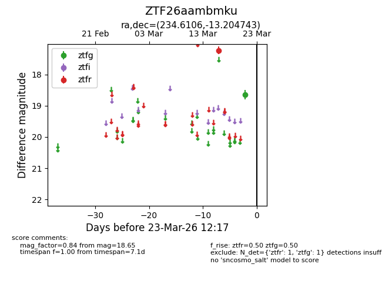
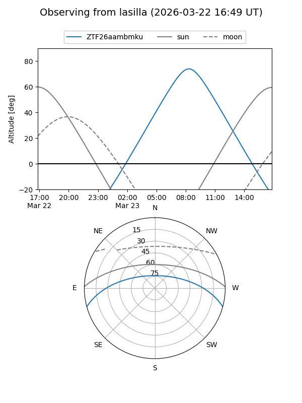
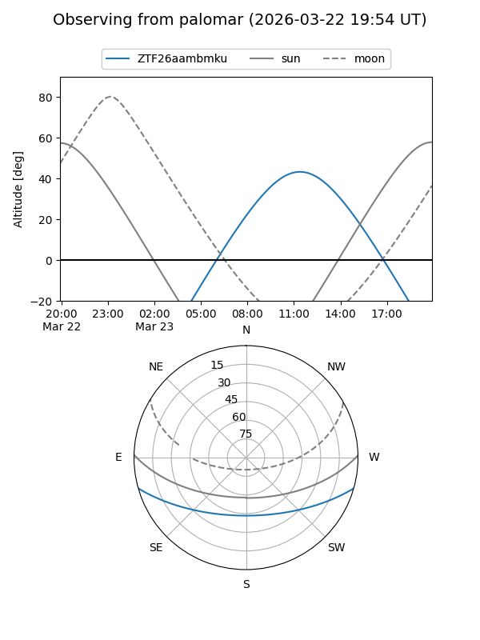

ZTF26aambmku
Target ZTF26aambmku at 2026-03-23 12:19
Aliases and brokers:
FINK: link
Lasair: link
ALeRCE: link
alt names
ZTF26aambmku (ztf,fink_ztf)
Coordinates:
equatorial (ra, dec) = 234.6106,-13.20474
equatorial (HMS+DMS) = 15:38:26.54,-13:12:17.08
galactic (l, b) = (353.4276,+32.83723)
Flags:
Photometry:
last ztfg=18.65, ztfr=17.23
1 ztfg, 1 ztfr detections
Lightcurve

Visibility


Additional plots